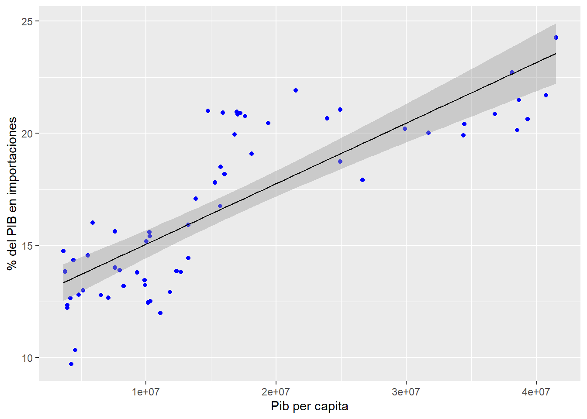

3 Punto 2
Para la siguiente actividad es necesario que entre un código do file/Script, las bases de datos antes de cargar en Stata/R y las bases finales luego de todas las modificaciones que considere pertinente.
- Seleccione 2 variables económicas que tengan una relación teórica, describa que dice la teoría sobre esta relación y su interpretación sobre la forma de esta relación.
La teoría económica presenta una relación desde la perspectiva macroeconómica en la cual en la ecuación fundamental del PIB a medida que se tiene mayor ingreso, aumenta el consumo de bienes ya sea importados o nacionales. Ademas, esta misma relación se puede observar desde la perspectiva microeconómica donde a mayor ingreso, mayor es el consumo de bienes de un individuo. Por lo anterior, es posible afirmar que la forma de la relación de estas dos variables va a ser fuertemente asociadas y de sentido directo.
- Busque las bases de datos adecuadas para representar ambas variables económicas. Describa la fuente de la información (ej. DANE, Banco mundial, Banco de la república, etc).
Se utilizarán las siguientes bases de datos en un periodo de tiempo de 60 años para verificar la relación económica estudiada en el país Colombia.
PIB per capita: World Data Bank.
% del PIB en importaciones: World Data Bank.
- Haga las transformaciones que considere pertinentes para poder ver la relación entre ambas variables.
Empezaremos por la importacion de la base de datoss:
# Importaciones
library(readxl)
API_NE_IMP_GNFS_ZS_DS2_en_excel_v2_4353198 <- read_excel("~/Jorge_uni/ULTIMO SEMESTRE/Eval de impacto/API_NE.IMP.GNFS.ZS_DS2_en_excel_v2_4353198.xls")
View(API_NE_IMP_GNFS_ZS_DS2_en_excel_v2_4353198)
Imports<-API_NE_IMP_GNFS_ZS_DS2_en_excel_v2_4353198Posteriormente, realizaremos la adecuacion pertinente de los datos:
# Limpieza de datos
Imports=Imports[-c(2)]
Imports=Imports[-c(3)]
Imports$...3<-NULL
Imports<-subset(Imports,Imports$`Data Source`=="Colombia")
Imports<-t(Imports)
Imports=Imports[-c(1,1)]
Imports<-as.numeric(Imports)
Imports<-as.data.frame(Imports)
colnames(Imports)<-c("% PIB Imports")
newnames<-as.character(seq.int(1960,2021,1))
row.names(Imports)<-newnames
# Generamos el CSV con la base de datos transformada.
write.csv(Imports, file="Imports.csv")Proseguimos con la segunda base de datos:
API_NY_GDP_PCAP_KD_DS2_en_excel_v2_4354025 <- read_excel("~/Jorge_uni/ULTIMO SEMESTRE/Eval de impacto/API_NY.GDP.PCAP.KD_DS2_en_excel_v2_4354025.xls")
GDP<-API_NY_GDP_PCAP_KD_DS2_en_excel_v2_4354025Analogamente, realizamos el tratamiento de la base de datos.
# Limpieza de datos
GDP$`World Development Indicators`<-NULL
GDP$...3<-NULL
GDP$...4<-NULL
GDP<-subset(GDP,GDP$`Data Source`=="Colombia")
GDP<-t(GDP)
GDP=GDP[-c(1,1)]
GDP<-as.numeric(GDP)
GDP<-as.data.frame(GDP)
colnames(GDP)<-c("PIB Per capita")
row.names(GDP)<-newnames
# Archivo CSV
write.csv(GDP,file="GDP.csv")Por ultimo, combinamos nuestras dataframes para poder realizar los procedimientos estadisticos solicitados.
# Combinar bases de datos
Base<-merge(GDP,Imports,by=0,all=TRUE)
colnames(Base)<-c("A?o", "PIB per capita","% PIB Imports")
Base$`A?o`<-NULLGrafico de correlacion:
# Grafico de correlacion
library(PerformanceAnalytics)
chart.Correlation(Base, histogram = TRUE, method = "pearson")Grafico de dispersion:
# Grafico de dispersion
library(ggplot2)
g<-ggplot(Base, aes(x=Base$`PIB per capita`, y=Base$`% PIB Imports`))+geom_point()
g<-g+theme_minimal()+ggtitle("Grafico de dispersion")+labs(x="PIB per capita", y="% PIB en Importaciones",caption="Autor: Jorge Orozco")
gModelo de regresion:
# Modelo
modelo<-lm(Base$`% PIB Imports`~Base$`PIB per capita`,data=Base)
summary(modelo)##
## Call:
## lm(formula = Base$`% PIB Imports` ~ Base$`PIB per capita`, data = Base)
##
## Residuals:
## Min 1Q Median 3Q Max
## -3.6531 -1.4154 -0.2257 1.3837 4.1637
##
## Coefficients:
## Estimate Std. Error t value Pr(>|t|)
## (Intercept) 7.8772891 0.7584756 10.39 5e-15 ***
## Base$`PIB per capita` 0.0023312 0.0001879 12.41 <2e-16 ***
## ---
## Signif. codes: 0 '***' 0.001 '**' 0.01 '*' 0.05 '.' 0.1 ' ' 1
##
## Residual standard error: 1.969 on 60 degrees of freedom
## Multiple R-squared: 0.7195, Adjusted R-squared: 0.7149
## F-statistic: 153.9 on 1 and 60 DF, p-value: < 2.2e-16ggplot(data=Base, aes(y=Base$`% PIB Imports`,x=Base$`PIB per capita`))+geom_point(col="blue")+geom_smooth(method="lm",col="black",size=0.5)+labs(x="Pib per capita",y="% del PIB en importaciones")Modelo de regresion cuadratico:
modelo2<-lm(Base$`% PIB Imports`~Base$`PIB per capita`^2)
summary(modelo2)##
## Call:
## lm(formula = Base$`% PIB Imports` ~ Base$`PIB per capita`^2)
##
## Residuals:
## Min 1Q Median 3Q Max
## -3.6531 -1.4154 -0.2257 1.3837 4.1637
##
## Coefficients:
## Estimate Std. Error t value Pr(>|t|)
## (Intercept) 7.8772891 0.7584756 10.39 5e-15 ***
## Base$`PIB per capita` 0.0023312 0.0001879 12.41 <2e-16 ***
## ---
## Signif. codes: 0 '***' 0.001 '**' 0.01 '*' 0.05 '.' 0.1 ' ' 1
##
## Residual standard error: 1.969 on 60 degrees of freedom
## Multiple R-squared: 0.7195, Adjusted R-squared: 0.7149
## F-statistic: 153.9 on 1 and 60 DF, p-value: < 2.2e-16ggplot(data=Base, aes(y=Base$`% PIB Imports`,x=Base$`PIB per capita`^2))+geom_point(col="blue")+geom_smooth(method="lm",col="black",size=0.5)+labs(x="Pib per capita",y="% del PIB en importaciones") _______________________________________________________________________________
- Interprete los resultados en función de la teoría que recopilo en el literal a.
Los resultados obtenidos en la gráfica de correlación nos marcan un grado de asociación de 0.85 por lo cual podemos inferir que nuestras dos variables están fuertemente relacionadas. Este grado de relación indica una asociación fuerte y positiva. Ademas, los resultados de la gráfica de dispersión nos confirman doblemente esta relación positiva y directa entre las variables. Se puede observar como los puntos alrededor de la nube están distribuidos de buena manera y no parece haber un sesgo, aun así, se sugiere hacer una prueba para comprobarlo. Por otro lado, desde el punto de vista del modelo de regresión podemos observar; un grado de significancia elevado (tres estrellas para nuestra variable) y una relación positiva entre esta y la variable explicada. Un coeficiente de correlación (r2) de 0.71 y una p - value que indica significancia estadística.
Todo el análisis anterior nos confirma que tal cual indicaba la teoría económica acerca de la relación de estas dos variables parece que se cumple en el caso de Colombia, se concluye pues que a medida que crece el pib per cápita a su vez crece el % de importaciones. Esto es lógico ya que a mayor ingreso disponible para el país mayor va a ser su adquisición de bienes y servicios. Finalmente, el modelo cuadrático muestra el mismo comportamiento que el modelo simple.
3.1 Referencias
Blanchard O. Melino A. & Johnson D. R. (2003). Macroeconomics (2nd Canadian). Prentice Hall.
Acemoglu, D., Laibson, D., & List, J. (2017). Economía ([edition missing]). Antoni Bosch Editor, S.A. Retrieved from https://www.perlego.com/book/2809312/economa-pdf (Original work published 2017)
Wooldridge, J. M. (2010). INTRODUCCION A LA ECONOMETRIA: UN ENFOQUE MODERNO (4a. ed.). MEXICO: CENGAGE LEARNING.